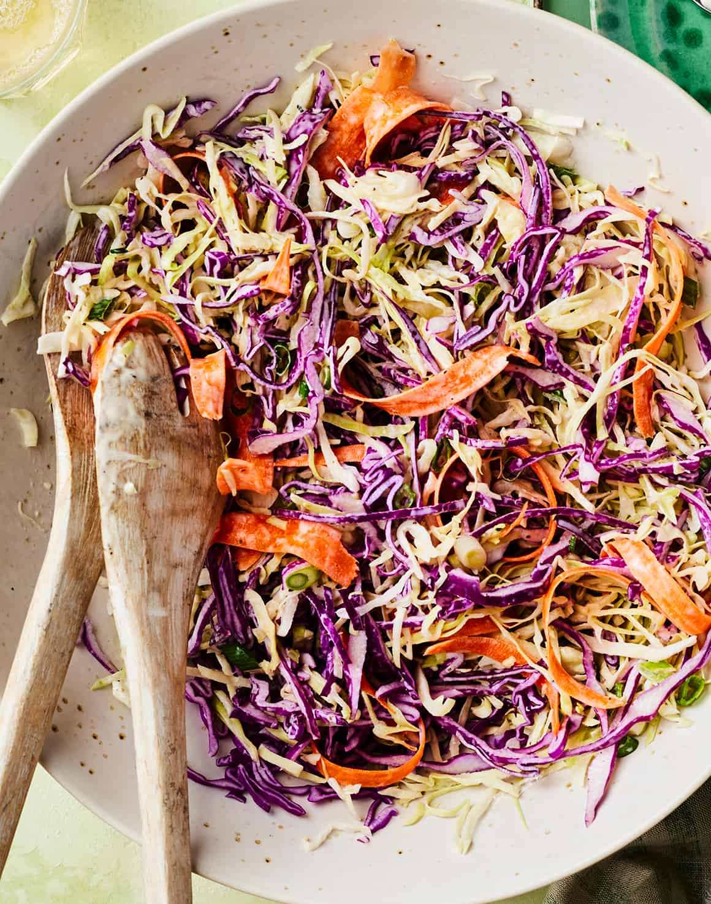

Vegan Coleslaw

This easy vegan coleslaw is the perfect side dish for a summer cookout, picnic, or BBQ. It tastes just like classic coleslaw, but the ingredients all happen to be 100% plant-based. A creamy, sweet, and tangy dressing coats crunchy cabbage, carrots, and scallions. Set it out at your next gathering with whatever you’re grilling, and I promise, it’ll be a hit! No one will guess that this coleslaw is vegan.
The Ingredients
- Scant ¾ cup Vegan Mayo*
- 3 tablespoons apple cider vinegar
- 1 tablespoon Dijon mustard
- 1 tablespoon pure maple syrup
- ¾ teaspoon celery seed
- ¼ teaspoon sea salt
- 8 cups shredded cabbage
- 2 medium carrots, peeled into thin ribbons
- 3 scallions, chopped
- Freshly ground black pepper
The Instructions
- Make the dressing. In a medium bowl, whisk together the mayo, apple cider vinegar, mustard, maple syrup, celery seed, salt, and several grinds of pepper.
- Make the coleslaw. In a large bowl, toss together the cabbage, carrots, and scallions. Pour the dressing over the top and toss to coat. Season to taste with more salt and pepper as desired.